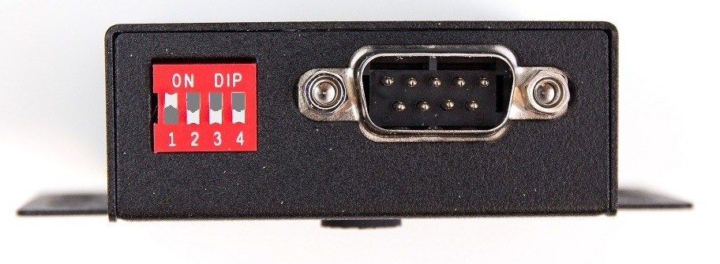

БДКГ-22/23. Прошивка
Если контроллер уже был прошит, подключиться к блоку для прошивки НЕ ПОЛУЧИТСЯ!
Для того чтобы перепрошить блок:
- Отключить питание
- Замкнуть выводы (вставить перемычку):
- Подключить питание
- Достать перемычку
- БДКГ-22 и 23 прошиваются специальным кабелем DB9⟶Fisher с двумя линиями A/B и разъемом питания для 12В
- Подключается к компьютеру через адаптер USB-COMi-SI-M с нестандартными настройками
- bdkg22.hex — для БДКГ-22. Измерение в зивертах.
- bdkg23.hex — для БДКГ-23. Измерение в греях.
- bdkg23а.hex — для БДКГ-23/1 (изначально назывался БДКГ-23А). Измерение в зивертах.
- Шить через Flip:
- Наклеить наклейку с версией прошивки
 Есть три версии прошивки:
Есть три версии прошивки:

Можно прошить БДКГ-22/23 не используя перемычку, а значит можно прошивать/перепрошивать блоки не разбирая их, прямо в корпусе
Суть метода заключается в разблокировке загрузчика через Terminal
- Подключиться через прошивочный кабель
- Подать питание на кабель
- Кабель к USB-COMi адаптеру подключить через переходник (схема)
{kind=link}
- На USB-COM адаптере выставить:
- Запустить Terminal для БДКГ-22 (если такого нет, вот настройки Command)
- Выбрать com-порт
- Скорость — 19200 (Baud)
- (Для проверки можно нажать ID, блок должен ответить)
- Выбрать: "Настройка", "+", "->"
- Выбрать: "Внутрисхемный загрузчик", "+", "->" БД разблокирован (пока подключено питание)
- Порт: выбрать "Off" (или закрыть Flip), чтобы освободить порт
- Подключить кабель к USB-COM адаптеру без переходника (ПИТАНИЕ ОТ КАБЕЛЯ НЕ ОТКЛЮЧАТЬ! иначе блок опять заблокируется)
- На адаптере поставить: 
- Теперь можно шить стандартным способом (через Flip)